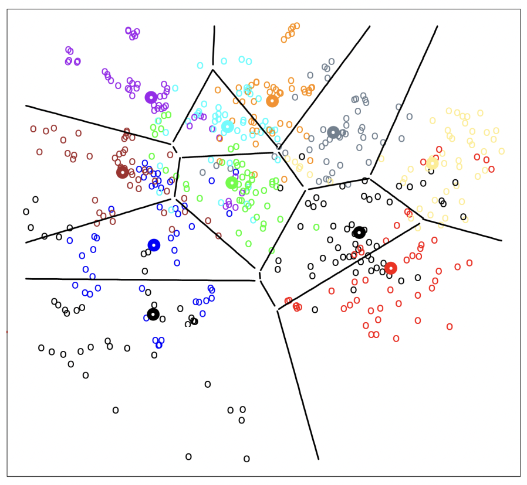
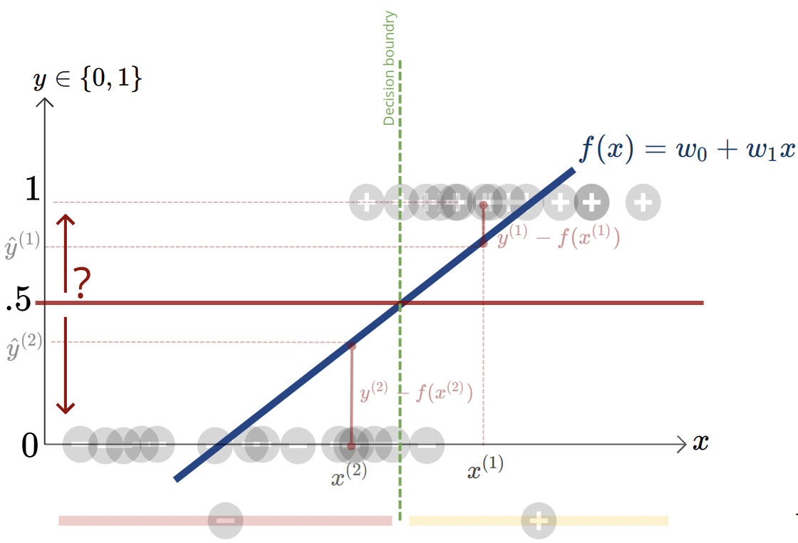
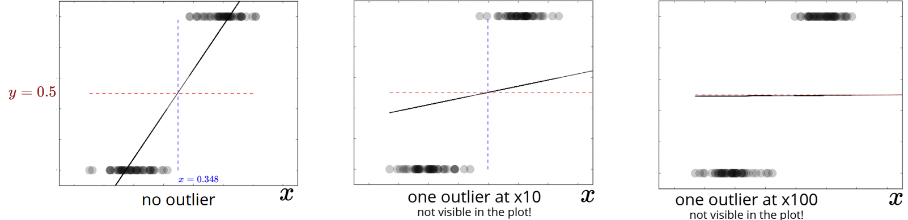
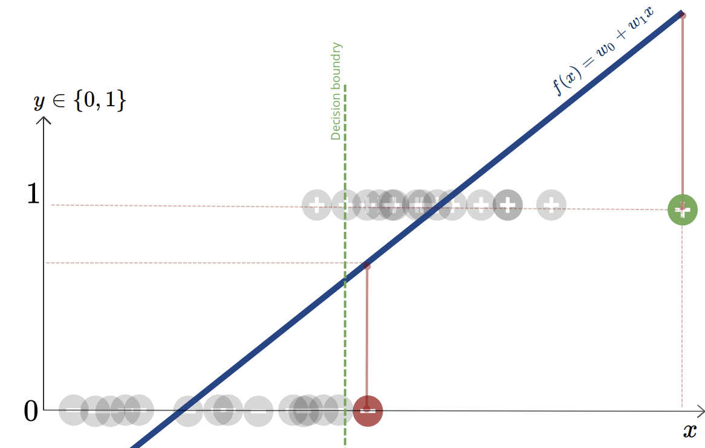

Logistic Regression
We can use regression models to solve classification problems. The goal in classification is to take some dataset of inputs $x^{(n)}\in \mathbb{R}^D$ and to assign it to one of $C$ discrete classes or taregts $y^{(n)}\in \{1,\dots,C\}$. In the most common scenario, the classes are taken to be disjoint, so that each input is assigned to one and only one class. The input space is thereby divided into decision regions whose boundaries are called decision boundaries or decision surfaces.
An example of a partition of a data into decision boundaries based on their discrete classification is shown below, where each coloured datapoint comes from a different class or target.
So how should we adapt our linear regression analysis to handle classification problems? Consider our first attempt: suppose we have a set of data that are sorted into two binary classes: $+$, assigned a value of $1$ and $-$, assigned a value of $0$.
Below we try to fit the linear model $f(x)=w_0+w_1x$ using L2 loss, i.e by a least squares error method, and also describe a threshold value for $y$ values that are class $1$, by using the indicator function $t=\mathbb{I}(f(x)>0.5)$. And finally, when drawing a decision boundary, we want to predict for which values of $x^{(n)}$ will get a class $1$ output, or a class $0$, and so we vertically bisect our plane, as shown:
What could go wrong with an attempt like this? Well, an issue arises when we outlier datapoints. Since we plot via a least squares method, far out outlier data points will heavily shift our regression curve towards such an outlier, as it ends up dominating the L2 loss function. A visual example of this is shown below:
Beyond outliers, there is still another issue with this approach, and that is the fact that the error definition we use can unitentionally ascribes a large error to datapoints that are in fact classified correctly, and this error can also be larger than on other datapoints where the classification is incorrect. The image below illustrates this problem:
As shown, a correctly classified '$+$' data on the furthest right has a very sizeable error associated with it, and what makes it more worrying is that this error appears larger than an incorrectly classified '$-$' datapoint. So it seems like we need a more robust approach.
The general idea is that for all the classes we have $y\in \{0,1,\dots,C\}$, we want to fit a linear model to each of these classes, by assigning weights to our regression function as:
$$\mathbf{w}_c^*=\arg\min_{w_c}\frac 12 \sum_{n=1}^N \left(\mathbf{w}_c^{\top}x^{(n)}-\mathbb{I}\left(y^{(n)}=c\right)\right)^2$$And the output class is given by:
$$\hat{y}^{(n)}=\arg\max_c f_c(x)=\arg\max_c \mathbf{w}_c^{\top}x^{(n)}$$To help with this, we use the logistic function $\sigma:\mathbb{R}\rightarrow\mathbb{R}$, also known as a squashing, or sigmoid function, because the values are "squahsed" together (either at $0$ or $1$) for $\mathbf{w}^{\text{T}}\mathbf{x}>0$ or $\mathbf{w}^{\text{T}}\mathbf{x}< 0$. The logistic function is defined as:
$$\sigma(x)=\frac{1}{1+e^{-x}}=\frac{e^x}{1+e^x}$$And has the property that $1-\sigma(x)=\sigma(-x)$, and notice if $\sigma(x)=\frac 12 \Longleftrightarrow x=0$.
And so we define our new regression model as:
$$f_w(x)=\sigma\left(\mathbf{w}^{\top}\mathbf{x}\right)=\frac{1}{1+e^{-\mathbf{w}^{\top}\mathbf{x}}}$$Note the argument passed as input $\mathbf{w}^{\text{T}}\mathbf{x}$ is often abbreviated as $z$, and called the logit. The decision boundary corresponds to value of the logit/argument where $\sigma(z)=\frac 12$. As $z$ moves away from this boundary, the classifier becomes more confident in its prediction about the class label.
As with linear regression, we need to find a way to find the best values for the weights. We do this in an analogous way as we did for linear regression: we define some cost (loss) function, and the best logistic regression model is the one with the lowest cost. This time, we will not use the L2 loss function (least square error): $L_2(\hat{y},y)=\frac 12(y-\hat{y})^2$ (where $\hat{y}=\sigma\left(\mathbf{w}^{\top}\mathbf{x}\right)$) as the L2 function will no longer be convex in $\mathbf{w}$ (due to the sigmoid function), and so it will be difficult to optimize.
We could use the zero-one loss function: $L_{0/1}(\hat{y},y)=\mathbb{I}(y\neq \hat{y})$, which essentially let's us know when the predicted value is not the same as our true value. This is a non-continuous function in $\mathbf{w}$ (the only outputs of this loss function are $0$ and $1$), which makes this choice also quite difficult to optimize.
A third idea is to use what's called the cross-entropy loss function, and is defined as:
$$L_{CE}(\hat{y},y)=-y\log(\hat{y})-(1-y)\log(1-\hat{y})$$Firstly, this function is convex in $\mathbf{w}$. We will discuss a probabilistic interpretation of this loss function later. But now, we need to optimize:
$$J(w)=\sum_{n=1}^N-y^{(n)}\log\left(\sigma\left(\mathbf{w}^{\top}\mathbf{x}\right)\right)-\left(1-y^{(n)}\right)\log\left(1-\sigma\left(\mathbf{w}^{\top}\mathbf{x}\right)\right)$$Where we have $\hat{y}=\sigma\left(\mathbf{w}^{\top}\mathbf{x}\right)$, and by noting that $\log\left(\frac{1}{1+e^{-\mathbf{w}^{\top}\mathbf{x}}}\right)=-\log\left(1+e^{-\mathbf{w}^{\top}\mathbf{x}}\right)$, and also recall since $1-\sigma(x)=\sigma(-x)$, we can also write $\log\left(1-\frac{1}{1+e^{-\mathbf{w}^{\top}\mathbf{x}}}\right)=\log\left(\frac{1}{1+e^{\mathbf{w}^{\top}\mathbf{x}}}\right)=\log\left(1+e^{\mathbf{w}^{\top}\mathbf{x}}\right)$, which will give us:
$$J(w)=\sum_{n=1}^N y^{(n)}\log\left(1+e^{-\mathbf{w}^{\top}\mathbf{x}}\right)+\left(1-y^{(n)}\right)\log\left(1+e^{\mathbf{w}^{\top}\mathbf{x}}\right)$$This already looks pretty ugly, and unfortunately we won't have a closed form solution for the weights. But we can still take the derivative:
\begin{align*}\frac{\partial}{\partial w_d}J(w) & =\sum_n -y^{(n)}x_d^{(n)}\frac{e^{-\mathbf{w}^{\top}x^{(n)}}}{1+e^{-\mathbf{w}^{\top}x^{(n)}}}+x_d^{(n)}\left(1-y^{(n)}\right)\frac{e^{\mathbf{w}^{\top}x^{(n)}}}{1+e^{\mathbf{w}^{\top}x^{(n)}}} \\ & = \sum_n -x_d^{(n)}y^{(n)}\left(1-\hat{y}^{(n)}\right)+x_d^{(n)}\left(1-y^{(n)}\right)\hat{y}^{(n)} \\ & = \sum_n x_d^{(n)}\left(\hat{y}^{(n)}-y^{(n)}\right) \end{align*}So we're left with:
$$\nabla J(w)=\sum_n x^{(n)}\left(\hat{y}^{(n)}-y^{(n)}\right)$$Which is exactly the same result we got for linear regression! The difference, of course, is that $\hat{y}^{(n)}=\sigma\left(\mathbf{w}^{\top}x^{(n)}\right)$
We can also offer a probabilistic interpretation of what we have been doing. Let $\hat{y}=p_w(y=1|x)=\sigma\left(\mathbf{w}^{\top}\mathbf{x}\right)$, i.e we define the probability of observing a class of $1$ given our data $x$, which will define our predicted value $\hat{y}$, i.e the output of the logistic function. For simplicity, let this be a binary classification.
Taking the log of the ratio of class probabilities:
$$\log \frac{\hat{y}}{1-\hat{y}}=\log \frac{\sigma\left(\mathbf{w}^{\top}x^{(n)}\right)}{1-\sigma\left(\mathbf{w}^{\top}x^{(n)}\right)}=\log\frac{1}{e^{-\mathbf{w}^{\top}\mathbf{x}}}=\mathbf{w}^{\top}\mathbf{x}$$And since we are dealing with binary classification, the probability distribution of the output events follow a Bernoulli distribution:
$$p\left(y^{(n)}|x^{(n)};w\right)=\text{Bernoulli}\left(y^{(n)};\sigma\left(\mathbf{w}^{\top}\mathbf{x}^{(n)}\right)\right)=\hat{y}^{(n)^{y^{(n)}}}\left(1-\hat{y}^{(n)}\right)^{1-y^{(n)}}$$Now that we have our model and some data, let us use maximum likelihood to try to find the model that best fits the data. Recall we write out our likelihood function as:
$$L(w)=\prod_{n=1}^N p\left(y^{(n)}|x^{(n)};w\right)=\prod_{n=1}^N \hat{y}^{(n)^{y^{(n)}}}\left(1-\hat{y}^{(n)}\right)^{1-y^{(n)}}$$And now let's find the value of $w$ that maximizes the likelihood function, and again, let's work with the $\log$ of the likelihood function:
\begin{align*} w^* & = \max_w \sum_{n=1}^N \log p_w \left(y^{(n)}|x^{(n)};w\right) \\ & = \max_w \sum_{n=1}^N y^{(n)} \log \left(\hat{y}^{(n)}\right)+\left(1-\hat{y}^{(n)}\right) \\ & = \min_w J(w)\;\;(\text{the cross entropy cost function!}) \end{align*}This gives us our much needed probabilistic interpretation for the cross entropy function: in that using the cross entropy function is like maximizing the conditional log likelihood function under a Bernoulli distribution.
Multiclass Classification
For binary classication, we assumed our prediction followed a Bernoulli distrubution:
$$\text{Bernoulli}(y|\hat{y})=\hat{y}^y(1-\hat{y})^{1-y}$$Subject to $\hat{y}\in [0,1]$ by way of the logistic function $\hat{y}=\sigma(z)=\sigma\left(\mathbf{w}^{\top}\mathbf{x}\right)$
But now, for many classes, we must generalize by assuming the predictions follow a categorical distribution:
$$\text{Categorical}(y|\hat{y})=\prod_{c=1}^C \hat{y}_c^{\mathbb{I}(y=c)}=\begin{cases} \hat{y}_1 & y=1 \\ \hat{y}_2 & y=2 \\ \;\vdots \\ \hat{y}_C & y=C \end{cases}$$Where we have $C$ categories, and one parameter per each category that denotes the probability that we find ourselves in a particular category. We also note that $\sum_c \hat{y}_c=1$.
We can also find the maximum likelihodd estimate by writing out (for parameter $\theta$):
\begin{align*} \text{Likelihood:} & & p(\mathcal{D}|\theta) &=\prod_{x\in \mathcal{D}} \text{Cat}(x|\theta)=\prod_{x\in \mathcal{D}}\prod_{k=1}^K \theta_k^{\mathbb{I}(x=k)}=\prod_{k=1}^K \theta_k^{N_k},\;\;\;N_k=\sum_{x\in \mathcal{D}}\mathbb{I}(x=k) \\ \text{Log-Likelihood:} & & \ell(\theta,\mathcal{D}) & =\sum_{x\in \mathcal{D}}\sum_k\mathbb{I}(x=k)\log(\theta_k)=\sum_k N_k \log(\theta_k) \end{align*}And solving $\frac{\partial}{\partial \theta_k}\ell(\theta,\mathcal{D})=0$ subject to $\sum_k \theta_k=1$ using Lagrange multipliers gives us the same maximum likelihood as with the binary case, which is just the ratio of the data-frequencies, $\hat{\theta}_k^{\text{MLE}}=\frac{N_k}{N}$.
With binary classification, we used the logistic function $\sigma:\mathbb{R}\rightarrow (0,1)$ to produce a single probability, but with multiclass classification, we use sofmax, which is a function $\mathbb{R}^C\rightarrow \Delta_C$ which takes as input a vector of size $C$, and returns a probability simplex, i.e a vector of length $C$ whose elements sum to $1$. More formally, $p\in \Delta_c\rightarrow \sum_{c=1}^C p_c=1$. Formally, the softmax function for an entry indexed at $c$ is written as:
$$\hat{y}_c=\text{softmax}(z)=\frac{e^{z_c}}{\sum_{c'=1}^C e^{z_{c'}}}$$Which ensures that $\sum_c \hat{y}=1$. A quick example of this function in use is:
$$\text{softmax}\left(\begin{bmatrix}1 & 1 & 2 & 0 \end{bmatrix}\right)=\begin{bmatrix} \frac{e}{2e+e^2+1} & \frac{e}{2e+e^2+1} & \frac{e^2}{2e+e^2+1} & \frac{1}{2e+e^2+1} \end{bmatrix}$$The reason this function is called softmax is because it behaves similarly to $\arg\max$, in that if one entry in the input dominates, the output will identify it as the maximim. For instance, $\text{softmax}\left(\begin{bmatrix}10 & 100 & -1 \end{bmatrix}\right)\approx \begin{bmatrix}0 & 1 & 0 \end{bmatrix}$. And so, softmax is similar to the logistic function in that they are squashing functions.
To use softmax for multiclass classification, we would have one weight parameter vector for each class, i.e $\mathbf{w}_1=\begin{bmatrix} w_{1,1} & w_{1,2} & \cdots & w_{1,D} \end{bmatrix}$, then dotting these wieghts with our data vector $\mathbf{x}$, we pass this as input into our softmax function, and it returns the probabilities associated to each class, in other terms:
$$\hat{y}_c=\text{softmax}\left(\begin{bmatrix} \mathbf{w}_1^{\top}\mathbf{x} & \cdots & \mathbf{w}_C^{\top}\mathbf{x} \end{bmatrix}\right)_c=\frac{e^{\mathbf{w}_c^{\top}\mathbf{x}}}{\sum_{c'}e^{\mathbf{w_{c'}}^{\top}\mathbf{x}}}$$To simplify the notation, let $z_c=\mathbf{w}_c^{\top}\mathbf{x}$, and so:
$$\hat{y}_c=\text{softmax}\left(\begin{bmatrix}z_1 & \cdots & z_C \end{bmatrix}\right)_c=\frac{e^{z_c}}{\sum_{c'}e^{z_{c'}}}$$To find the optimal values for the weights, we can similarly perform a maximum likelihood analysis, by substituting in the softmax function for $\hat{y}_c$ in our categorical distribution above. By definition of the likelihood function, we product over the distributions:
\begin{align*} L(\{w_c\}) & = \prod_{n=1}^N \prod_{c=1}^C \text{softmax}\left(\begin{bmatrix} z_1^{(n)} & \cdots & z_C^{(n)} \end{bmatrix}\right)_c^{\mathbb{I}(y^{(n)}=c)} \\ & = \prod_{n=1}^N \prod_{c=1}^C \left(\frac{e^{z_c^{(n)}}}{\sum_{c'}e^{z_{c'}^{(n)}}}\right)^{\mathbb{I}(y^{(n)}=c)} \end{align*}And computing the log-likelihood:
$$\ell\left(\{w_c\}\right)=\sum_{n=1}^N\sum_{c=1}^C\mathbb{I}\left(y^{(n)}=c\right)\left(z_c^{(n)}-\log\sum_{c'}e^{z_{c'}^{(n)}}\right)$$To simplify this further, we can use a trick called one-hot encoding, which is a technique you can use for any categorical variable to turn into a binary variable, by mapping:
$$y^{(n)}\rightarrow \begin{bmatrix} \mathbb{I}(y^{(n)}=1) & \cdots & \mathbb{I}(y^{(n)}=C) \end{bmatrix}$$Where you break your categorical variable in $C$ cardinality into $C$ different columns. A quick example is shown below:
$$y^{(n)}\in \{1,2,3\}\Longrightarrow y^{(n)}\in \left\{\begin{bmatrix} 1 & 0 & 0 \end{bmatrix}, \begin{bmatrix} 0 & 1 & 0 \end{bmatrix}, \begin{bmatrix} 0 & 0 & 1 \end{bmatrix} \right\}$$So we use this technique for our $y^{(n)}$ labels to absorb the indicator function in our log likelihood to obtain:
$$\ell\left(\{w_c\}\right)=\sum_{n=1}^N\left(y^{(n)^{\top}}z_c^{(n)}-\log\sum_{c'}e^{z_{c'}^{(n)}}\right)$$Which is known as the softmax cross entropy function, and is the negative of the log-likelihood, where $z_c=\mathbf{w}_c^{\top}\mathbf{x}$. And so our cost function we wish to optimize is:
$$J\left(\left\{w_c\right\}\right)=-\sum_{n=1}^N\left(y^{(n)^{\top}}z_c^{(n)}-\log\sum_{c'}e^{z_{c'}^{(n)}}\right)$$If we were to implement this directly, we may run into overflow or underflow problems due to the presence of the exponential. To prevent this, let us use the following mathematical trick:
$$\log \sum_c e^{z_c}=\color{red}\overline{z}\color{black}+\log\sum_c e^{z_c-\color{red}\overline{z}\color{black}}$$ $$\text{Where }\overline{z}\leftarrow \max_c z_c$$And now we can optimize over the training data $\mathcal{D}=\left\{\left(x^{(n)},y^{(n)}\right)\right\}_n$ to find the best model parameters $\left\{w_c\right\}_c$ by minimizing the cost function and hence, maximizing the liklihood of $\mathcal{D}$. We do this by gradient descent, and to do so, we calculate the gradient first:
$$\nabla J(w)=\underbrace{\begin{bmatrix} \frac{\partial}{\partial w_{1,1}}J & \cdots & \frac{\partial}{\partial w_{1,D}}J & \cdots & \frac{\partial}{\partial w_{C,D}} \end{bmatrix}^{\top}}_{\text{Length }C\times D}$$And we compute the derivatives using chain rule:
$$\frac{\partial}{\partial w_{c,d}}J=\sum_{n=1}^N \frac{\partial J}{\partial z_c^{(n)}}\frac{\partial z_c^{(n)}}{\partial w_{c,d}}=\sum_n \left(\hat{y}_c^{(n)}-y_c^{(n)}\right)x_d^{(n)}$$Where $\frac{\partial z_c^{(n)}}{\partial w_{c,d}}=x_d^{(n)}$ since remember that $z_c=\mathbf{w}_c^{\top}\mathbf{x}$, whose element wise product would be something of the form $w_1x_1+\cdots+w_nx_n$, and taking the derivative with respect to the elements of $\mathbf{w}$ will pull out the elements of $\mathbf{x}$ only. In addition, $\frac{\partial J}{\partial z_c^{(n)}}= -y_c^{(n)}+\frac{e^{z_c^{(n)}}}{\sum_{c'}e^{z^{(n)}_c}}$, by using standard differentiation rules for logarithms. And then, $\frac{e^{z_c^{(n)}}}{\sum_{c'}e^{z^{(n)}_c}}=\hat{y}_c^{(n)}$, our softmax function we defined above.